SD 模型咒语
一组 Stable Diffusion 实用模型与提示词速查：盲盒、3D 卡通道具、玻璃拟态图标、B 端图标、充气膨胀风与金融 2.5D 配图，附带模型链接、触发词与出图参数。
本文整理自一份 SD 模型咒语笔记，收录 6 组常用模型的完整出图配置。提示词与参数按原文转录，方便直接复制使用；模型版权归各自作者所有。
01 / Blindbox · 盲盒风格
| 基础大模型 | ReV Animated · civitai.com/models/7371 |
| 辅助模型 | blindbox · civitai.com/models/25995/blindbox |
| 触发关键词 | full body, chibi |
| 正向提示词 | (masterpiece),(best quality),(ultra-detailed), (full body:1.2),chibi,cute, (beautiful detailed face), (beautiful detailed eyes),「眼睛，皮肤、头发、服饰、姿势、时间、地点」,lora:blindbox_v1_mix:1 |
| 反向提示词 | (low quality:1.3), (worst quality:1.3) |
| 细化图形 | 勾选高分辨率修复，高清修复采样次数调到 15，重绘幅度调到 0.6。 |
| 出图示例 | 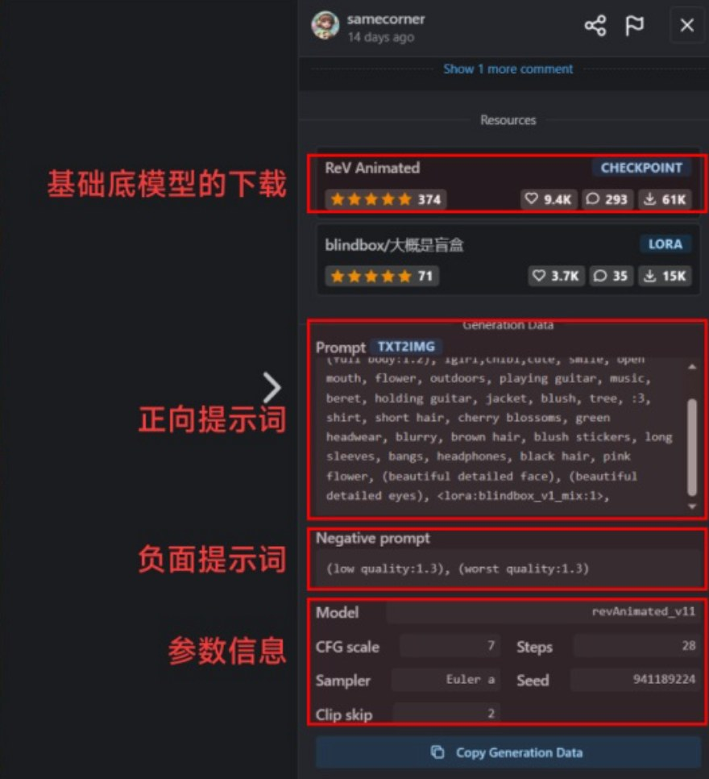 |
| 参数设置 | 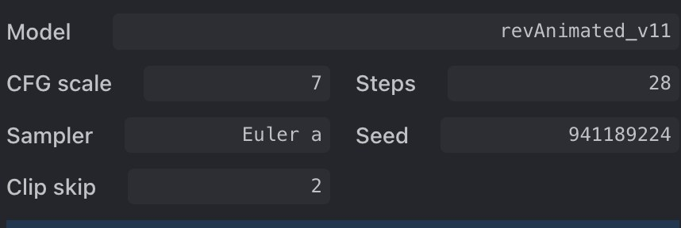 |
02 / 3D 卡通道具物品元素
| 基础大模型 | ReV Animated · civitai.com/models/7371 |
| 辅助模型 | 3d cartoon stage property elements/cartoon icon · civitai.com/models/176962 |
| 触发关键词 | 3dzujian, 3d rendering |
| 正向提示词 | masterpiece,best quality,sandwich,cute,3dzujian,3d rendering,Cartoon material,clean background,white background,blank background, lora:3dzujianV3-000010:1 |
| 反向提示词 | bad quality,low quality,jpeg artifact,cropped,flank,reverse side,no reflexes,human,Features, organisms |
| 出图示例 | 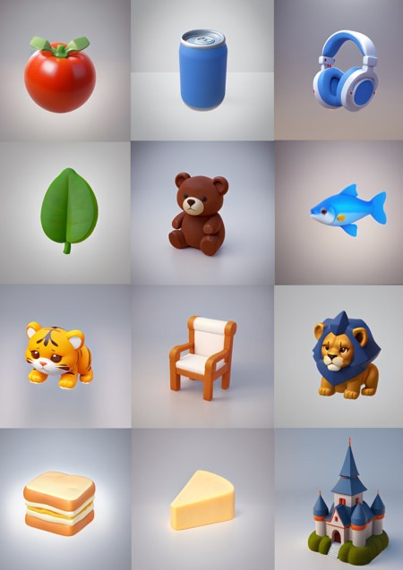 |
| 参数设置 | 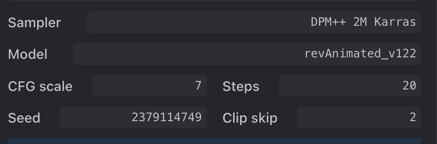 |
03 / Glassmorphism · 玻璃拟态图标
| 基础大模型 | SD XL · civitai.com/models/101055 |
| 辅助模型 | Glassmorphism Icon For Android App · civitai.com/models/199456 |
| 触发关键词 | glassmorphism icon |
| 正向提示词 | camera,realistic,3d,C4D rendering,shining,gradient,gradient background,blue background,purple background,glassmorphism icon,lora:glassmorphism_icon:1, |
| 反向提示词 | lowres,bad anatomy,bad hands,text,error,missing fingers,extra digit,fewer digits,cropped,worst quality,low quality,normal quality,jpeg artifacts,signature,watermark,username,blurry,ugly,pregnant,vore,duplicate,morbid,mutilated,transexual,hermaphrodite,long neck,mutated hands,poorly drawn hands,poorly drawn face,mutation,deformed,bad proportions,malformed limbs,extra limbs,cloned face,disfigured,gross proportions,missing arms,missing legs,extra arms,extra legs,pubic hair,plump,bad legs,error legs,bad feet |
| 出图示例 | |
| 参数设置 | 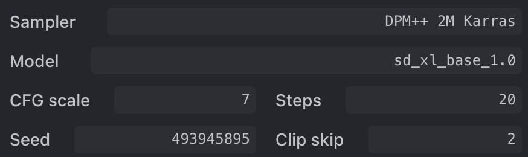 |
04 / B 端图标
| 基础大模型 | DDicon · civitai.com/models/38511/ddicon |
| LoRA 模型 | Playstation5DesignAI · civitai.com/models/79588 |
| 触发关键词 | —（原文未标注） |
| 正向提示词 | best quality, many details, 4k, blender, octane render, C4D, transparent glass texture, DDicon, blue, frosted glass, transparent technology sense, industrial design, white background, studio lighting, sunshine, flat, minimal, quasi-object, axisymmetric, Data, cylinder, file, |
| 反向提示词 | lowers, bad anatomy, ((bad hands)), (worst quality:2), (low quality:2), (normal quality:2), paintings, sketches, lowres, bad hands, text, error, missing, tingers, |
| 采样器 | DPM++ SDE Karras |
| 采样迭代步数 | 20 |
| 提示词相关性 | CFG Scale 12 |
| 随机种子 | -1 |
| ControlNet | 启用 V1.1.440；线稿（Lineart）& control_v11p_sd15_lineart [43d4be0d]；硬边缘（Canny）& control_v11p_sd15_canny [d14c016b] |
| 出图示例 | |
| 线稿 ControlNet | 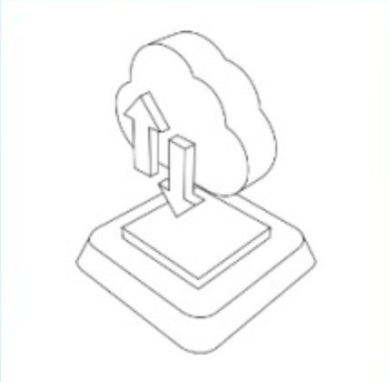 |
| 硬边缘 ControlNet | 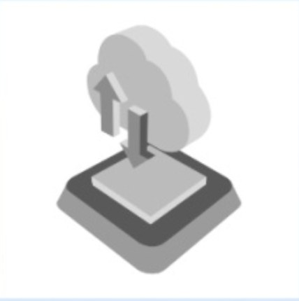 |
05 / Inflatable · 充气膨胀风图标
| 基础大模型 | revAnimated v122 |
| Lora 模型 | Inflatable 充气膨胀风图标 |
| 权重 | 0.8 - 1 |
| 触发关键词 | (two eyes:1.3),inflatable,plastic-bag style,cartoon,(white background:1.4) |
| 正向提示词 | (two eyes:1.3),inflatable,plastic-bag style,cartoon,(white background:1.4),(icon:0.8),white,0:1 |
| 反向提示词 | NSFW,logo,text,blurry,low quality,bad anatomy,sketches,lowres,bad proportions,cropped,watermark,signature,worst quality,grayscale,monochrome,normal quality,out of focus,username,three eyes,4 eyes,5 eyes,6 eyes,7 eyes,pink,blue, |
| 采样器 | DPM++ 2M Karras |
| 采样迭代步数 | 30 - 35 |
| 随机种子 | 1 |
| 应用行业 | KV 点缀、出行、教育行业等；可用于手机主题图标、小组件、主 KV，通过 ControlNet 控制形状，也可自行添加物品及颜色关键词控制出图。 |
| 出图示例 | 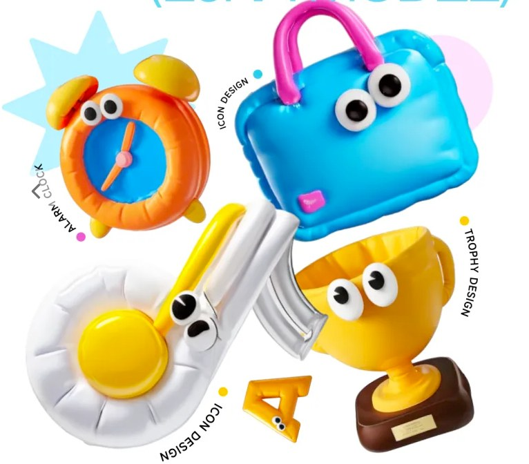 |
06 / 金融 2.5D 情感化配图
| 基础大模型 | revAnimated v122 |
| Lora 模型 | 金融 2.5D 情感化配图 |
| 权重 | 0.8 - 1 |
| 触发关键词 | fintechsquare |
| 正向提示词 | fintechsquare,no humans,white background,simple background,solo,square base,transparent material,blue,white,technology,data,circle surrounding, |
| 反向提示词 | EasyNegative,NSFW,(worst quality:2),(low quality:2),(normal quality:2),lowres,bad anatomy,bad hands,text,error,missing fingers,extra digit,fewer digits,cropped,jpeg artifacts,signature,watermark,username,blurry, |
| 采样器 | DPM++ SDE Karras |
| 采样迭代步数 | 20 |
| 提示词引导系数 | 7.0 |
| 随机种子 | 1 |
| 应用行业 | B 端系统图标、banner 插画 |
| 出图参数（一） | 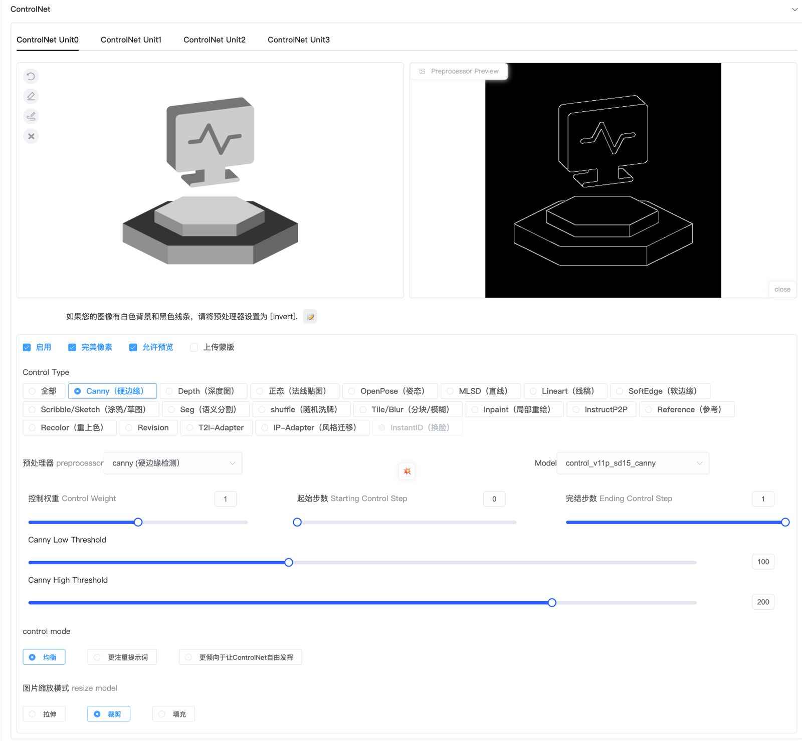 |
| 出图参数（二） | 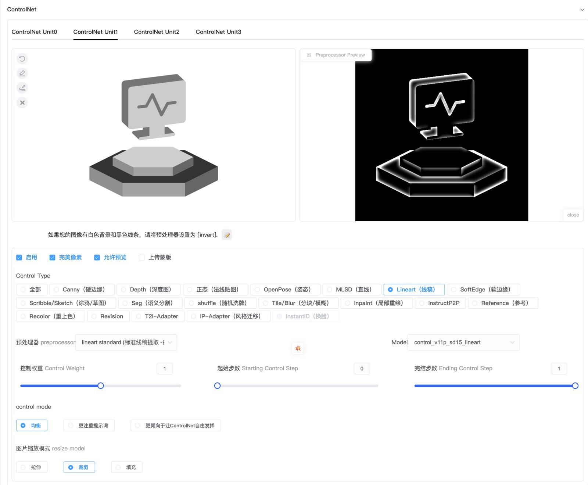 |
| 练习作品 | 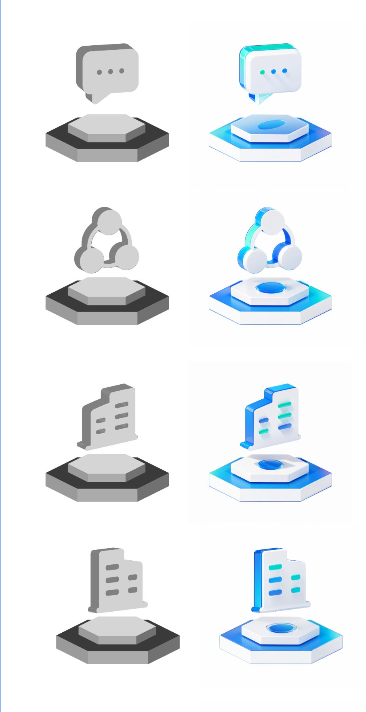 |
「 咒语 = 基础大模型 + Lora + 触发词 + 正反向提示词 + 采样参数。复制即用的六套配方。 」
— 原文要点整理